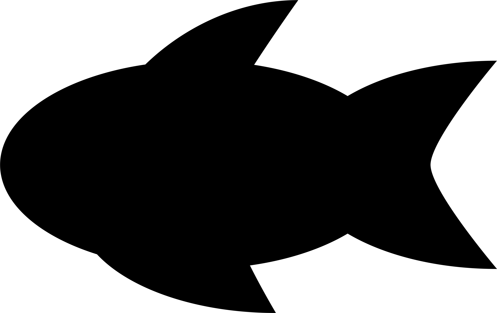

<div class="listItem">
  <div class="main">
    <div class="species">
      <div class="thumbnailWrapper">
        
      </div>
      <h2>{{ name }}</h2>
    </div>
    <div class="status">
      <div class="status-item count"
      [ngClass]="[getCountStatus(), minGroupSize ? '' : 'reworkNumbers']">
        <div class="number-current"
        [ngClass]="count > 9 ? 'adjusted' : ''"
        >
          {{ count }}
        </div>
        <div class="divider">|</div>
        <div class="number-recommended">{{ minGroupSize }}</div>
      </div>
      <div class="status-item space {{ requiredSpaceResult }}" #space>
        
      </div>
      <div class="status-item community" [ngClass]="assessCommunity() ? 'sadFace' : 'happyFace'">
        <!-- Generator: Adobe Illustrator 23.0.1, SVG Export Plug-In . SVG Version: 6.00 Build 0)  -->
        <svg
          version="1.1"
          id="communityImage"
          xmlns="http://www.w3.org/2000/svg"
          xmlns:xlink="http://www.w3.org/1999/xlink"
          x="0px"
          y="0px"
          viewBox="0 0 443.7 436.9"
          style="enable-background: new 0 0 443.7 436.9"
          xml:space="preserve"
        >
          <g id="face">
            <g id="eyes">
              <g>
                <circle cx="92.4" cy="80.5" r="55.5" />
              </g>
              <g>
                <circle cx="351.3" cy="80.5" r="55.5" />
              </g>
            </g>
            <path
              id="smile"
              d="M221.8,436.9c-59.3,0-115-23.1-156.9-65C23.1,330,0,274.3,0,215c0-10.2,8.3-18.5,18.5-18.5S37,204.8,37,215
		c0,102,82.9,184.9,184.8,184.9c102,0,184.9-82.9,184.9-184.9c0-10.2,8.3-18.5,18.5-18.5s18.5,8.3,18.5,18.5
		c0,59.3-23.1,115-65,156.9C336.8,413.8,281.1,436.9,221.8,436.9z"
            />
            <path
              id="meh"
              d="M406.8,322.1H36.9c-10.2,0-18.5-8.3-18.5-18.5s8.3-18.5,18.5-18.5h369.9c10.2,0,18.5,8.3,18.5,18.5
		S417,322.1,406.8,322.1z"
            />
          </g>
        </svg>
      </div>
    </div>
  </div>
  <div class="delete" (click)="delete()">
    <!-- Generator: Adobe Illustrator 23.0.1, SVG Export Plug-In . SVG Version: 6.00 Build 0)  -->
    <svg
      version="1.1"
      id="removeBtn"
      xmlns="http://www.w3.org/2000/svg"
      xmlns:xlink="http://www.w3.org/1999/xlink"
      x="0px"
      y="0px"
      viewBox="0 0 146 146"
      style="enable-background: new 0 0 146 146"
      xml:space="preserve"
    >
      <style type="text/css">
        .st0 {
          fill: #c1272d;
        }
        .st1unique {
          fill: #ffffff;
        }
      </style>
      <g id="removeBtnGroup">
        <circle class="st0" cx="73" cy="73" r="73" />
        <path [ngClass]="count > 1 ? 'reduce' : ''"
          class="st1unique"
          d="M43.7,108.9c-1.7,0-3.4-0.6-4.7-1.9c-2.6-2.6-2.6-6.8,0-9.4L97.6,39c2.6-2.6,6.8-2.6,9.4,0
c2.6,2.6,2.6,6.8,0,9.4L48.4,107C47.1,108.3,45.4,108.9,43.7,108.9z"
        />
        <path [ngClass]="count > 1 ? 'reduceAlt' : ''"
          class="st1unique"
          d="M102,109.2c-1.7,0-3.4-0.6-4.7-1.9L38.8,48.7c-2.6-2.6-2.6-6.8,0-9.4c2.6-2.6,6.8-2.6,9.4,0l58.5,58.5
c2.6,2.6,2.6,6.8,0,9.4C105.4,108.5,103.7,109.2,102,109.2z"
        />
      </g>
    </svg>
  </div>
</div>
